Fermat
Fermat 
Els nostres serveis
A Fermat Òptics treballem per oferir un servei integral en salut visual i auditiva. Comptem amb professionals qualificats i tecnologia actual per garantir diagnòstics precisos, seguiments personalitzats i solucions adaptades a cada etapa de la vida.
-

Optometria
La graduació és només el principi. Mirem com treballen els teus ulls junts, com enfoquen de prop i com aguanten un dia sencer de pantalla.
Demana hora -

Salut ocular
La salut ocular és fonamental per mantenir una bona qualitat de vida. Els òptics optometristes estem qualificats i preparats per detectar alteracions oculars. A les nostres graduacions revisem el teu ull. Prevenir es curar.
Demana hora -

Contactologia
Adaptem lents de contacte també en casos difícils: multifocals, queratocon, còrnies irregulars, post-LASIK, control de miopia i lents estètiques.
Demana hora -

Audiometria
Fem estudis auditius complets, no un test ràpid: diagnostiquem el tipus i el grau de pèrdua i, si cal, adaptem audiòfons.
Tot sobre audiologia -

Miopia infantil
La miopia d'un nen avança mentre creix. Avui es pot alentir, i com abans es comenci, millor. Fem control i seguiment amb lents i tractaments específics.
Demana hora
Marques
Treballem amb les millors marques
Ulleres, lents de contacte i audiòfons de confiança.
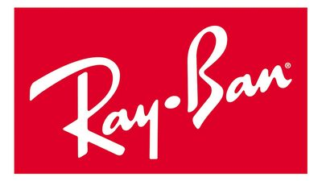
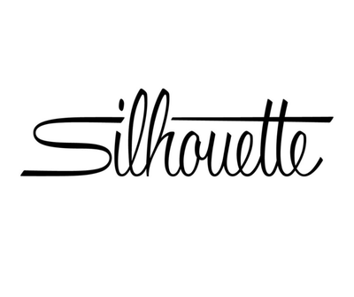
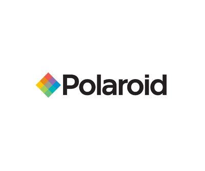
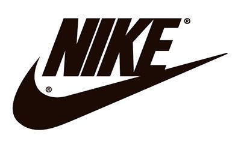
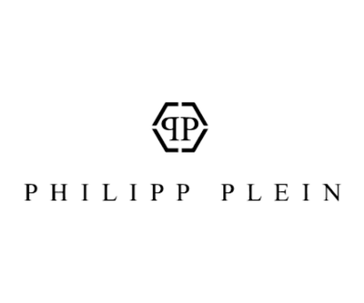
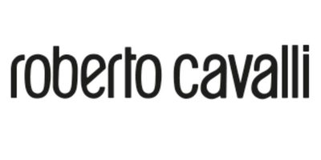
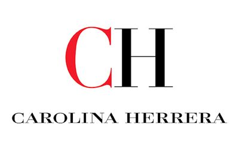
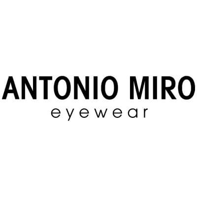
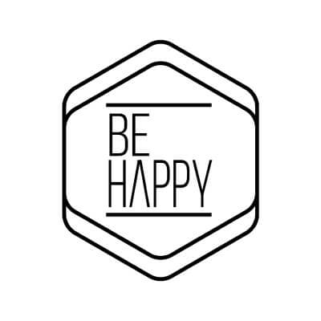
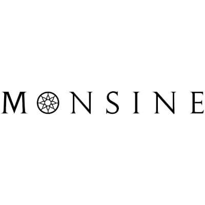
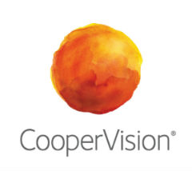
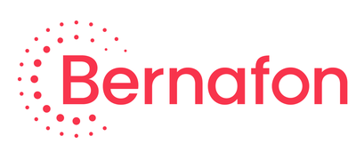
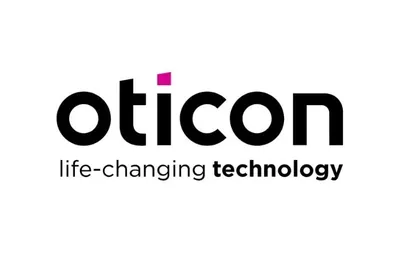
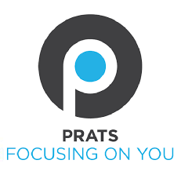
Contacte
Tens preguntes o dubtes?
Escriu-nos o truca'ns i t'ho resolem. Estem aquí per ajudar-te a triar el que et convé.